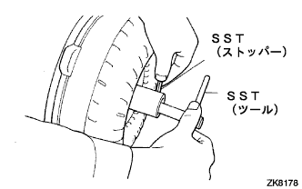
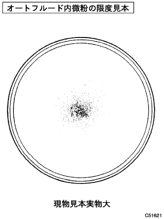
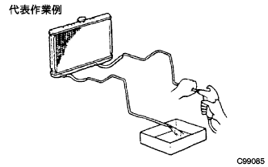
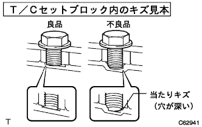
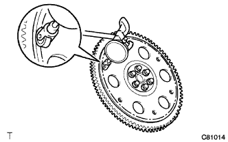

Torque converter & drive plate inspection |
| 1. Torque converter ASSY inspection |
|  |
Torque converter one -way clutch inspection
Insert the SST (tool) into the status shaft.
SST (stopper) is inserted from the sleeve part of the torque converter and matched the star thread washer cutting.
Stand a torque converter and turn the SST (tool).
Torque converter ASSY judgment
|  |
If the results of the torque converter apply to the standard content, replace the torque converter.
Auto fluid exchange in the torque converter
When the auto fluid is odorous, stir the auto fluid in the torque converter well and remove the auto fluid with the mounting surface up.
Cleaning inspection of oil cooler and oil pipeline
|  |
When the torque converter is inspected and the auto fluid exchange is performed, the oil cooler and pipeline are cleaned.
If the auto fluid is cloudy, check the oil cooler (radiator).
Prevention of torque converter deformation and oil pump gear damage prevention
If there is an interference mark on the tip of the torque converter mounting bolt and the bottom of the torque converter mounting hole, replace the bolt and torque converter.
|  |
The mounting bolt length is all the same (within 0.5 mm) (there is no missing Spring washer).
| 2. Drive plate & ring gear SUB-ASSY inspection |
Drive plate inspection
|  |
Check the swing of the drive plate using the dial gauge.
Ring gear inspection
Inspect the status of the ring gear.